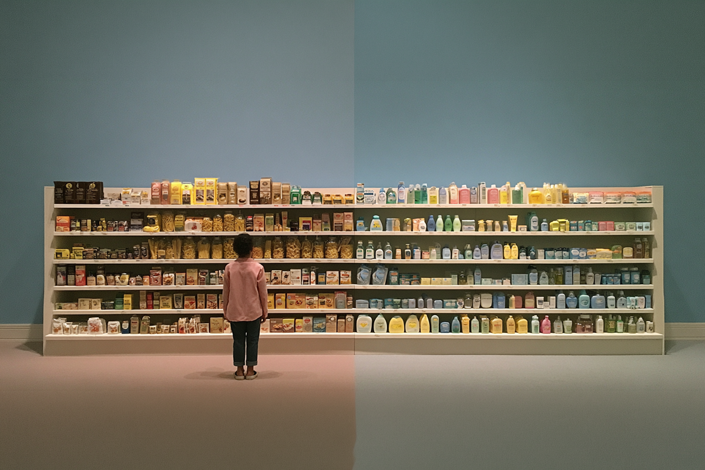
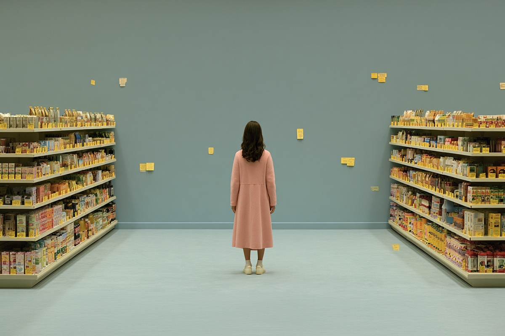
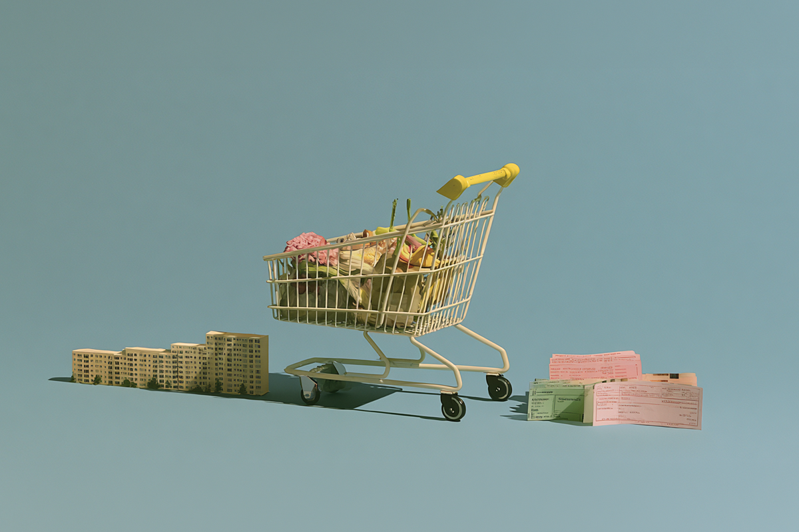
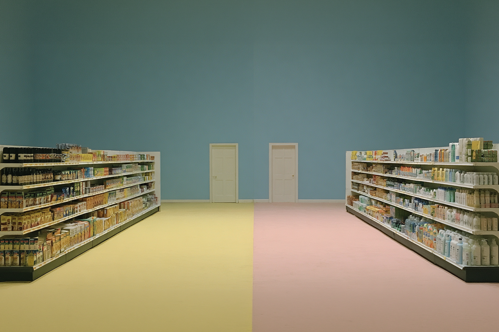

¿Chile se volvió tan caro como Europa?
Lo que el super no te está contando
Lo que el super no te está contando

Hace casi dos años me vine a vivir a Italia y llegué con una idea muy instalada en la cabeza: que todo iba a ser mucho más caro que en Chile.
Al principio me dio bastante incertidumbre no saber cuánto iba a gastar al mes. Así que, para no llevarme sorpresas, empecé a mirar todo con más atención y activé mi ojo periodístico. Y el primer lugar donde lo hice fue en el supermercado.
Porque al final, es ahí donde uno arma gran parte del presupuesto sin pensarlo demasiado.
Con el tiempo me pasó algo que no esperaba. Y es que los precios del super en Italia (específicamente en Milán) no me parecieron tan distintos a los de Chile. Y no solo eso, varios productos que compraba en Chile los encontré acá sin problema, a veces incluso las mismas marcas o versiones muy parecidas.
Al hablarlo con otros chilenos que han vivido o viajado por Europa, me di cuenta de que no es solo una sensación personal. Así que me pregunto: ¿Chile realmente está tan caro como Europa? ¿O estamos comparando mal desde el principio?

Si miramos solo las estanterías, la sensación es clara: hay productos donde la diferencia entre Chile y Europa no se siente tan grande.
Café, shampoo, detergente y varias marcas globales entran en esa categoría donde los precios parecen acercarse.
Por ejemplo, un café Lavazza en Italia puede costar alrededor de 3,29 euros, mientras que en Chile ese mismo producto importado puede superar los $7.000 CLP.
Pero el punto no es solo el precio, sino el contexto.
En Italia, ese café es parte del consumo diario. En Chile, es un producto importado con costos de logística, impuestos y distribución. Y de ahí empieza algo importante: aunque el producto sea el mismo, la economía detrás no lo es.
Esto también se repite en otros casos: productos de alta rotación como pasta o higiene personal pueden parecer más baratos en Europa simplemente porque son parte del consumo masivo local. Por ejemplo, la pasta Barilla.

Antes de viajar, es típico caer en videos de “costo de vida en Europa” o “supermercado en España”. Y claro, ese tipo de contenido influye para pensar que no es tanta la diferencia.
Pero ese es solo un pedazo del cuento. Porque el costo de vida real no se define en el supermercado, sino en los gastos que casi nunca aparecen en redes sociales.
El arriendo, por ejemplo, cambia completamente la ecuación. En ciudades como Milán, puede ir fácilmente entre 700 y 1.800 euros mensuales, dependiendo de la zona y el tamaño. Y ese no es un detalle menor.
Cuando sumas vivienda, transporte y servicios, lo que parecía similar deja de serlo en un dos por tres.

Este es el corazón de este tema.
Hoy consumimos prácticamente los mismos productos en todos lados: las mismas marcas, los mismos supermercados, los mismos artículos de uso diario. Pero los sueldos no se han globalizado al mismo ritmo.
Y eso genera una sensación engañosa, porque puedes ver precios similares en productos cotidianos, pero el poder adquisitivo no es el mismo.
Según comparaciones de costo de vida (Numbeo e IPSOS 2025), países como Italia y España tienen sueldos promedio más altos que Chile, mientras que en Chile algunos bienes globales se han acercado en precio.
Pero, de nuevo, el poder de compra sigue siendo muy distinto. Y ahí nace la frase que se repite tanto: “Chile ya está casi igual de caro que Europa”.
Pero cuando miras el panorama completo, esa afirmación se empieza a desarmar.

España suele ser el país más típico en estas comparaciones, probablemente porque culturalmente es más cercano y porque en varios casos tiene un costo de vida más bajo que Italia. Pero incluso ahí el patrón se repite.
Algunos productos pueden sentirse similares a Chile, pero al sumar vivienda, transporte y estilo de vida, el costo total sigue siendo distinto.
La respuesta corta: no. La respuesta real: depende de qué estás mirando.
Si comparas productos globales, la distancia se achica. Pero si miras el costo completo de vivir, la brecha sigue siendo real.
El supermercado puede ser engañoso. Hace que todo se sienta más parecido de lo que realmente es. Pero al sumar arriendo, transporte y sueldos, la comparación cambia por completo.
Y al final, lo que queda es una sensación difícil de ignorar: que algunas partes de la vida se han ido globalizando, mientras otras siguen profundamente distintas dependiendo de dónde estés viviendo.
 Finanzas
FinanzasSi últimamente has abierto LinkedIn, probablemente lo has visto: parece que todos hablan del “futuro del trabajo”.
 Finanzas
FinanzasChile no está en el Mundial 2026. Ya lo sabemos, ya dolió, ya hicimos memes tristes y nos resignamos a ver la Copa del Mundo desde la casa.
 Finanzas
FinanzasAtrás han quedado los tiempos donde los vuelos se compraban con agencias de turismo. En las últimas décadas y con la modernización de los…